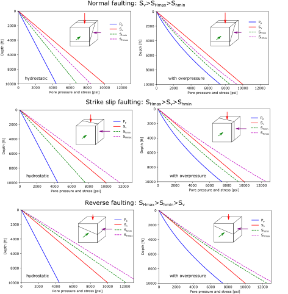
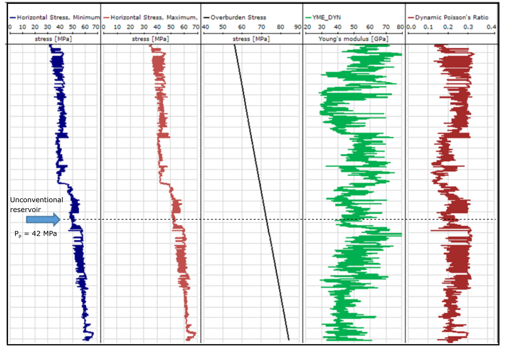

Next: 3. Fundamentals of Solid Continuum Up: Introduction to Energy Geomechanics Previous: 1. Introduction Contents
Similarly to fluid pressure, rock stresses change with depth. Yet, changes in rock stresses depend not only on depth but also on the properties of the rock and tectonic stresses if any. This chapter presents a summary of the calculation of vertical stress (total and effective) and pore pressure with depth. The chapter also reviews the concept of horizontal stress from a phenomenological point of view. The calculation of horizontal stress requires a mechanical model that will be introduced in subsequent chapters.
The lithostatic stress gradient is the variation of total vertical stress  with vertical depth (usually referred as true depth in petroleum engineering).
The following subsections review the fundamental concepts of stress, stress equilibrium, and effective stress.
with vertical depth (usually referred as true depth in petroleum engineering).
The following subsections review the fundamental concepts of stress, stress equilibrium, and effective stress.
Consider the solid bar in Figure 2.1.
Two forces
and
 pull the bar in opposite directions.
Underlining indicates the variable is a vector in
pull the bar in opposite directions.
Underlining indicates the variable is a vector in
 (three dimensions).
Equilibrium requires summation of (vectorial) forces to be zero, hence,
.
If the solid bar has a weight, then equilibrium requires
(three dimensions).
Equilibrium requires summation of (vectorial) forces to be zero, hence,
.
If the solid bar has a weight, then equilibrium requires
 , the difference is the weight
, the difference is the weight
 .
.
Stress is defined as force  over area
over area  (perpendicular to the force) such that
(perpendicular to the force) such that
 |
(2.1) |
The units of stress are [Force]/[Area]: MPa, psi, etc., but it does not necessarily mean stress is a pressure! Stress depends on the direction in which is measured, while pressure is the same in all directions. The directionality of stress is a result of the solid capacity to resist shear stresses.
In a 3D porous solid with volume
(Figure 2.2), equilibrium requires the summation of (vectorial) forces in all directions to be zero
.
Equilibrium of forces in the vertical direction (gravity  direction) requires
(forces in vertical direction).
Hence,
direction) requires
(forces in vertical direction).
Hence,
 |
(2.2) | ||
 |
(2.3) | ||
 |
(2.4) |
Considering infinitesimal variations yields the following equation
| (2.5) |
The term within the integral in the right-hand-side
 is called the vertical total stress gradient, or sometimes, simply as lithostatic stress gradient.
In a semi-infinite medium (e.g. approximation of the Earth's surface)
is called the vertical total stress gradient, or sometimes, simply as lithostatic stress gradient.
In a semi-infinite medium (e.g. approximation of the Earth's surface)
 .
.
If
 , then vertical stress as a function of depth is
, then vertical stress as a function of depth is
The total vertical stress is a compressive stress and by convention in geomechanics we assign it a positive sign.
EXAMPLE 2.1:
Assume a rock made of 100% quartz (mass density
) with 20% porosity filled with water (mass density ).
What is the lithostatic stress gradient?
SOLUTION
The bulk (volume average) rock mass density
 depends on porosity
depends on porosity  , volume fractions of mineral phases, and volume fractions of fluid phases.
For a water-saturated rock:
, volume fractions of mineral phases, and volume fractions of fluid phases.
For a water-saturated rock:
 |
 kg/m
kg/m and
kg/m (check out https://nature.berkeley.edu/classes/eps2/wisc/glossary2.html, look for specific gravity SG).
Then,
and
kg/m (check out https://nature.berkeley.edu/classes/eps2/wisc/glossary2.html, look for specific gravity SG).
Then,
 kg/m kg/m kg/m kg/m kg/m kg/m |
and 19.4 ppg (pounds per gallon), where 1 kg = 2.2 lb, 1 ft = 0.305 m, and 1 ft = 7.48 US gallon.
The stress gradient results
kg/m m/s m/s Pa/m MPa/km Pa/m MPa/km |
 Pa and 1 Km = 10 m.
Pa and 1 Km = 10 m.
Let us calculate the stress gradient in petroleum field units (psi/ft).
First, we need to convert kg to lb (1 kg = 2.205 lb) and m to ft (1 m = 3.281 ft), thus
 kg/m
kg/m lb/ft.
Second, we will pass pounds mass (lb) to pounds force (lbf).
This takes into account multiplying for
lb/ft.
Second, we will pass pounds mass (lb) to pounds force (lbf).
This takes into account multiplying for  , so you should not multiply any numerical value going from lb to lbf.
Third, we will separate the denominator in area times length, and convert ft to in:
, so you should not multiply any numerical value going from lb to lbf.
Third, we will separate the denominator in area times length, and convert ft to in:
 lbf/ft lbf/ft lbf/ft lbf/ft 1/ft 1/ft lbf/(12 in) 1/ft lbf/(12 in) 1/ft psi/ft psi/ft |
Typical vertical stress gradient are around  psi/ft MPa/km for porosity
.
Hydrostatic pore pressure gradient is
psi/ft MPa/km for porosity
.
Hydrostatic pore pressure gradient is  psi/ft
psi/ft  MPa/km.
You may use fluid saturations
MPa/km.
You may use fluid saturations
 if the rock has two or more fluids in the pore space to accurately calculate the vertical stress gradient.
You may also use the corresponding mineral volume fractions if the rock is comprised of two or more minerals, e.g., a dolomite-rich shale.
if the rock has two or more fluids in the pore space to accurately calculate the vertical stress gradient.
You may also use the corresponding mineral volume fractions if the rock is comprised of two or more minerals, e.g., a dolomite-rich shale.
Now that we have the stress gradient, we can calculate total stress at a given depth. Let's consider two cases: onshore and offshore.
First, consider an onshore scenario in which the surface coincides with the water table (in most practical applications this is a reasonable assumption).
Assume a constant fluid density and constant bulk rock mass density
(remember that it includes fluids within pores).
Then, the pore pressure gradient as a function of depth will be
as long as there is a connected pore network path from the surface to the depth , such that the fluid is in hydrostatic equilibrium (it may not happen sometimes).
The total vertical stress gradient as a function of depth is calculated with Equation 2.6 because in onshore conditions the assumption of constant bulk mass density with depth is acceptable.
Both (hydrostatic)  and increase linearly with depth with constant mass densities (Figure 2.3).
and increase linearly with depth with constant mass densities (Figure 2.3).
![\includegraphics[scale=0.55]{.././Figures/split/2-OnshorePpSv.pdf}](img140.svg) |
The difference between total stress and pore pressure is called “effective stress”; hence, the effective vertical stress is
Effective stresses in the subsurface are mostly compressive. Compressive effective stress holds rock together and compacts them.
Notice that  must hold in order to have a compressive effective vertical stress.
We will see later that effective stress is a very important quantity and dictates rock deformation and failure.
Figure 2.4 shows an example of effective stress making cohesionless ground coffee strong and stiff like a brick.
You will see this example in class how I stand on a “brick” of ground coffee thanks to Terzaghi's effective stress and how effective stress strengthens the coffee pack due to friction forces.
must hold in order to have a compressive effective vertical stress.
We will see later that effective stress is a very important quantity and dictates rock deformation and failure.
Figure 2.4 shows an example of effective stress making cohesionless ground coffee strong and stiff like a brick.
You will see this example in class how I stand on a “brick” of ground coffee thanks to Terzaghi's effective stress and how effective stress strengthens the coffee pack due to friction forces.
Similar to the membrane effect conceptualized in Figure 2.4, the mudcake that forms around a wellbore during drilling provides an effective stress to the surrounding rock.
This is a result of the sharp pressure gradient between the mud pressure in the well  and the pore pressure in the formation (Figure 6.4).
and the pore pressure in the formation (Figure 6.4).
EXAMPLE 2.2:
Compute the pore pressure and vertical stress at 4000 ft of depth (True Vertical Depth: TVD) underneath an onshore drilling rig.
The pore pressure gradient is hydrostatic with brine mass density of 1.04 g/cm and the average rock bulk mass density is about 2.35 g/cm.
Make a plot of pressure and vertical stress versus depth.
Show results in MPa and psi.
SOLUTION
The corresponding hydrostatic and lithostatic gradients are (keep in mind that 1 g/cm = 1 g/cc = 1000 kg/m):
 kg/m m/s kg/m m/s MPa/km MPa/km |
 kg/m m/s kg/m m/s MPa/km MPa/km |
 MPa/km MPa/km km MPa km MPa psi psi |
 MPa/km km MPa/km km MPa psi MPa psi |

In an offshore case we have to take into account the presence of overlying water weight proportional to thickness .
Again, let us assume constant mass densities for simplicity.
In the water, you cannot define a stress because there is no solid phase.
Within the water zone, fluid pressure will increase according to Eq. 2.7.
This fluid pressure will continue increasing within the seafloor sediments as long as there is a connected pore network from the seafloor to depth .
Stresses start to develop at the seafloor beyond depth  (Figure 2.6), such that the total vertical stress will be
(Figure 2.6), such that the total vertical stress will be
for |
(2.9) |
Notice that the total stress does not start at 0 at the seafloor . However, the important and “physically meaningful” quantity is effective stress and this one does start at zero at the seafloor.
 for for |
(2.10) |
EXAMPLE 2.3: Compute the pore pressure and vertical stress at 9000 ft of depth (TVD) underneath an offshore drilling rig with water depth of 2000 ft.
The pore pressure gradient is 0.44 psi/ft and the lithostatic gradient is 1 psi/ft.
The hydrostatic pressure gradient above the seafloor is 0.44 psi/ft as well.
Make a plot of pressure and vertical stress versus depth. Calculate effective stress at 9000 ft of depth.
Show results in MPa and psi.
SOLUTION
The pore pressure and hydrostatic gradient at = 9000 ft of total depth with water depth = 2000 ft are
 psi/ft psi/ft ft ft psi/ft ft psi/ft ft psi psi |
 psi/ft ft psi/ft ft psi/ft ft psi/ft ft psi psi |
 psi psi psi psi psi psi |
The values in SI units are
 MPa,
MPa, and
MPa.
MPa,
MPa, and
MPa.
For an interactive example of calculation of vertical stress with depth, check my Jupyter notebook at https://mybinder.org/v2/gh/dnicolasespinoza/GeomechanicsJupyter/master?filepath=PorePressureVerticalStress_Widget.ipynb
In the general case rock bulk mass density
varies with depth. For example, rock lithology will vary with depth.
Rocks usually have lower porosity as depth increases.
Brine mass density also changes with depth.
In general, vertical stress is calculated from integration of the equation
where
 is obtained from (gamma ray) density well logs and is obtained from the true vertical depth (TVD) calculated from the well measured depth (MD) and the well deviation survey (Figure 2.7).
Accurate calculations should account for the difference between the rotary table or kelly bushing (from where measured depth is often obtained) and the actual ground level.
This difference can be significant in offshore cases.
In deviated wellbores, you should also take into account wellbore deviation and compute TVD from MD and well trajectory.
is obtained from (gamma ray) density well logs and is obtained from the true vertical depth (TVD) calculated from the well measured depth (MD) and the well deviation survey (Figure 2.7).
Accurate calculations should account for the difference between the rotary table or kelly bushing (from where measured depth is often obtained) and the actual ground level.
This difference can be significant in offshore cases.
In deviated wellbores, you should also take into account wellbore deviation and compute TVD from MD and well trajectory.
Well logs contain “discrete” data, hence you have to do numerical integration. Equation 2.11 can be approximated with
where  is the i-th interval at depth .
You can code this equation as the “trapezoidal rule" in a for loop or in a spreadsheet.
For example, the vertical stress at the -th layer is
is the i-th interval at depth .
You can code this equation as the “trapezoidal rule" in a for loop or in a spreadsheet.
For example, the vertical stress at the -th layer is
where
![$\left[ ( \rho_{bulk}(i) + \rho_{bulk}(i-1))/2 \right] g $](img187.svg) is the average height of the trapezoid,
is the base of the trapezoid, and
is the average height of the trapezoid,
is the base of the trapezoid, and  is the total stress at the previous depth data point calculated with the same rule, but one level above.
The result is the addition of the weight of all layers above the point under consideration.
is the total stress at the previous depth data point calculated with the same rule, but one level above.
The result is the addition of the weight of all layers above the point under consideration.
EXAMPLE 2.4: Go to https://github.com/dnicolasespinoza/GeomechanicsJupyter and download the files 1_14-1_Composite.las and 1_14-1_deviation_mod.dev.
The first one is a well logging file (.LAS).
You will find here measured depth (DEPTH - Track 1) and bulk mass density (RHOB - Track 8).
Track 3 also shows bulk density correction (DRHO).
Add RHOB to DRHO to obtain the corrected bulk mass density.
The second file has the deviation survey of the well.
Use this file to calculate true vertical depth subsea (TVDSS) as a function of measured depth (MD) in the well logging file.
You may assume an average bulk mass density of 2 g/cc between the seafloor and the beginning of the density data.
Apply Equation 2.12.
Summations with discrete data sets can be easily done through a for loop.
SOLUTION
See Figure 2.8.
You may use the library https://pypi.org/project/lasio/ to open LAS files with python or write your own code to read the text files .LAS and .DEV.
![\includegraphics[scale=0.85]{.././Figures/split/2-VertStress_TVDSS.pdf}](img190.svg) |
Pore pressure is not hydrostatic everywhere.
In fact, many times pore pressure is an unknown!
In a system of “connected pores” under hydrostatic equilibrium (water does not move), pore pressure increases hydrostatically.
Non-hydrostatic variations of pore pressure are usually located adjacent to low permeability barriers (e.g., shale formations) that do not allow pore pressure to achieve hydrostatic equilibrium fast enough compared to the rate of sedimentation and pore pressure relief.
Hence, pore pressure gets locked-in.
In the example in Figure 2.9, pore pressure is hydrostatic until
 ft.
Overpressure develops from
ft to
ft.
Overpressure develops from
ft to
 ft (likely due to a low permeability mudrock).
Pore pressure below
ft is quite different from hydrostatic!
ft (likely due to a low permeability mudrock).
Pore pressure below
ft is quite different from hydrostatic!
A convenient parameter to relate pore pressure and total vertical stress is the dimensionless overpressure parameter  :
:
 |
(2.14) |
In stationary conditions cannot be larger than , hence,
 .
In onshore conditions
means hydrostatic pore pressure (
.
In onshore conditions
means hydrostatic pore pressure (
 in hydrostatic conditions offshore, why?).
Reservoir overpressure is good for hydrocarbon recovery (more energy to flow to the wellbore), however, it may cause geomechanical challenges for drilling (kicks).
Parameter
in hydrostatic conditions offshore, why?).
Reservoir overpressure is good for hydrocarbon recovery (more energy to flow to the wellbore), however, it may cause geomechanical challenges for drilling (kicks).
Parameter
 means little effective stress.
We will see later that rocks have effective stress-dependent strength.
Hence, overpressure leads to weak rocks, especially if they are not well cemented, difficult to drill.
means little effective stress.
We will see later that rocks have effective stress-dependent strength.
Hence, overpressure leads to weak rocks, especially if they are not well cemented, difficult to drill.
There are several mechanisms that may contribute to overpressure
.
First, hydrocarbon accumulations create overpressure due to buoyancy.
Overpressure
 is proportional to hydrocarbon column height
is proportional to hydrocarbon column height  and difference in mass density of pore fluids
and difference in mass density of pore fluids

 |
(2.15) |
is measured from the hydrocarbon-brine contact line upwards.
A connected pore structure is needed throughout the buoyant phase.
Second, changes in temperature cause fluids to dilate. If the fluids cannot escape quickly enough, then pore pressure increases. Third, clay diagenesis can expell water molecules. For example, when montmorillonite converts to illite at high pressure and temperature, previously bound water molecules get “added” to the pore space. Under constant pore volume conditions, such addition will result in increases of pore pressure. Fourth, hydrocarbon generation also induces overpressure. With hydrocarbon generation, the original organic compounds transform in another phase which occupies more volume at the same pressure conditions. Overpressure in organic-rich shales is a good indicator of hydrocarbon presence.
Changes of vertical and horizontal stresses can induce pore pressure changes. Pore pressure increases when a rock/sediment is compressed (such that the pore volume decreases) under conditions in which the fluid cannot escape quickly enough. Figure 2.12 shows a schematic representation of this concept.
 and pore pressure increases a magnitude
and pore pressure increases a magnitude
 , where is the area of the top lid.
starts to transfer to the sediment, so that the water takes now just a fraction of the weight and pore pressure reduces accordingly.
so now the vertical effective stress on the top is
, where is the area of the top lid.
starts to transfer to the sediment, so that the water takes now just a fraction of the weight and pore pressure reduces accordingly.
so now the vertical effective stress on the top is
 . The fluid does not support the weight anymore
. The fluid does not support the weight anymore
 . The time it takes to arrive to this scenario depends on the tube and valve hydraulic conductivity and the overpressure generated by the weight .
. The time it takes to arrive to this scenario depends on the tube and valve hydraulic conductivity and the overpressure generated by the weight .
Imagine now a sediment layer saturated with water. There is an impervious layer at the bottom. Water cannot escape from the sides either. Water can only escape from the top.
An overburden is placed quickly on the sediment so that it compacts an amount . Initially, the pore pressure increases everywhere the same amount. The pore pressure decreases preferentially at the top boundary (where it can flow) and the rate of pore pressure change is proportional to the hydraulic diffusivity parameter
 |
(2.16) |
 is the constrained rock “stiffness” (inverse of 1D compressibility
is the constrained rock “stiffness” (inverse of 1D compressibility  ),
),  is the sediment (vertical) permeability, and is the fluid viscosity.
The one-dimensional equation to this problem is
is the sediment (vertical) permeability, and is the fluid viscosity.
The one-dimensional equation to this problem is
 |
(2.17) |
The solution of the partial differential equation above give us a characteristic time for which  of the pore pressure is relieved,
of the pore pressure is relieved,
 |
(2.18) |
 is the characteristic distance of drainage.
In our example is the thickness of the sediment layer, the longest straight path to a draining boundary.
is the characteristic distance of drainage.
In our example is the thickness of the sediment layer, the longest straight path to a draining boundary.
EXAMPLE 2.5: Calculate the characteristic time of pore pressure diffusion for a 100 m thick sediment with top drainage considering
(a) a sand with  100 mD and
100 mD and  1 GPa, and
1 GPa, and
(b) a mudrock with 100 nD and 1 GPa.
The water viscosity is 1 mPa s.
SOLUTION
(a) Sand:
1.1 day.
(b) Mudrock:
3000 years.
The example in Figure 2.16 is a measurement of pore pressure that utilizes measurements of porosity in mudrocks (Track 3) to predict overpressure (Track 4).
The concept is simple: the porosity of clay-rich rock decreases with effective stress (Figure 2.15).
Let us assume the following equation for such dependence
 |
Under hydrostatic pore pressure conditions, vertical effective stress will always increase with depth. However, in the presence of overpressure, effective stress may increase less steeply or even decrease with depth. Hence, mudrocks with porosity higher than the porosity expected at that depth (in hydrostatic conditions) indicate overpressured sediment intervals (Figure 2.17).
 |
Figure 2.18 shows maps of pressure gradients in the Gulf of Mexico.
Data from offshore locations show that overpressure (gradient  0.44 psi/ft ) starts to develop at 2 to 3 km of depth below seafloor.
0.44 psi/ft ) starts to develop at 2 to 3 km of depth below seafloor.
 |
EXAMPLE 2.6: Calculate the pore pressure and overpressure parameter in a muddy sediment located offshore with porosity
 .
The total depth is 2000 m and the water depth is 500 m (assume a lithostatic gradient of 22 MPa/km below the seafloor).
Laboratory tests indicate a compaction curve with parameters
.
The total depth is 2000 m and the water depth is 500 m (assume a lithostatic gradient of 22 MPa/km below the seafloor).
Laboratory tests indicate a compaction curve with parameters
 MPa
MPa and
and
 .
How much higher than expected hydrostatic value is the pore pressure?
.
How much higher than expected hydrostatic value is the pore pressure?
SOLUTION
First, calculate total vertical stress:
MPa/km km km MPa/km MPa/km km MPa km MPa |
Second, calculate effective vertical stress from using the measured porosity and Equation 2.19:
 MPa MPa |
Third, calculate pore pressure from
 , so
, so
 MPa MPa MPa MPa MPa MPa |
Hence, the overpressure parameter is
 |
Opposite to overpressure, “underpressure” occurs when pore pressure is lower than hydrostatic. The most common reason of underpressure is reservoir depletion. In compartmentalized reservoirs with poor water recharge drive, pore pressure may stay low for long periods of time. Reservoir depletion usually brings along lower total horizontal stresses which lower the fracture gradient and make drilling problematic because of decreased difficulty to create open-mode fractures.
![\includegraphics[scale=0.65]{.././Figures/split/2-17.pdf}](img244.svg) |
Vertical (effective) stress is not enough to define the state of stress in a solid.
Stresses in horizontal direction are very often different to the stress in vertical direction.
The state of stress can be fully defined by the “principal stresses”.
These are three independent normal stresses in directions all perpendicular to each other.
A stress is a principal stress if there is no shear stress on the plane in which it is applied.
Total vertical stress may not be a principal stress, although in most cases it is.
If vertical stress is a principal stress, then the two other principal stresses are horizontal.
The maximum principal stress in the horizontal case is  and the minimum horizontal stress is
and the minimum horizontal stress is  , such that
(Figure 2.20).
, such that
(Figure 2.20).
We have seen that total vertical stress is mostly a function of overburden and depth. Now, what determines horizontal stresses? There is not an easy answer for that. Many variables affect and limit horizontal stresses. First, there are “background” horizontal stresses that develop due to the weight of overburden, its compaction, and “pushing sideways” effect. For example, water pushes sideways with all its weight (pressure is the same in all directions). Solids push sideways with a fraction of their weight. Second, horizontal stresses may deviate from background stresses - to be either more or less compressive. Tectonic plate movements are the main contributors to variations of horizontal stress. Convergent plates increase horizontal compression. Divergent plates decrease horizontal compression. Shear stresses develop at transform boundaries. Other factors include topography, crustal thickening/thinning, mass density anomalies, buoyancy forces, and lithospheric flexure (similar effect of a loaded slab).
The direction of maximum horizontal stress varies with location around the Earth's crust. Tectonic plate movements are the main contributors the affect the direction of maximum horizontal stress (See Figure 2.22).
![\includegraphics[scale=0.55]{.././Figures/split/3-18.pdf}](img248.svg) |
Geological formations can be indicators of “paleo-stress” direction, that is, the stress that caused such feature at a particular time. The paleo-stress, however, may be different from the current state of stress in magnitude and direction. Keep in mind that the Earth crust today is the results of millions of years of plate movement, smashing, and thinning/thickening (see this great animation of the Earth crust evolution since the Precambrian https://dinosaurpictures.org/ancient-earth#150.) The orientation of fault planes is an indicator of the state of stress that caused such fault. This topic will be seen later in “Fault stability" analysis. Folding direction also can give an idea of the horizontal stress that produced such fold. Natural fractures can be indicators of shear or open mode fractures. Both are related to the orientation of the state of stress. Earthquake focal mechanisms tell about the polarity of waves emitted by rock failure, where rock failure is also related to the orientation of the state of stress (to be covered later).
Magmatic and sedimentary dikes are natural hydraulic fractures. They form when a pressurized fluid/sediment mixture opens the subsurface and props the recently opened space with crystallized magma or sediments.
Dikes, like any other hydraulic fracture, open up preferentially against the least principal stress  .
.
The only way to know the current magnitude (and direction) of the minimum horizontal stress (if
 ) is to measure it.
Subsurface measurements of are based in hydraulic fracturing methods (to be seen in detail later in the course, Chapter 7).
Three types of hydraulic fracture tests are:
) is to measure it.
Subsurface measurements of are based in hydraulic fracturing methods (to be seen in detail later in the course, Chapter 7).
Three types of hydraulic fracture tests are:
is measured at about the value of the fracture closure pressure .
is based on the same principles of the extended leak-off test.
.
The variations of horizontal stress in the lithosphere give rise to three types of stress regimes, depending on the relative magnitude of horizontal stress with respect to vertical stress (Table 2.1).
Stress is a tensor.
Every stress tensor has three characteristic values called principal stresses  ,
,  , and (eigenvalues https://en.wikipedia.org/wiki/Eigenvalues_and_eigenvectors ).
The principal stress is the maximum normal stress value in a given direction (maximum total principal stress).
The principal stress is the minimum normal stress value in a given direction (minimum total principal stress).
The principal stress is an intermediate stress value at a direction perpendicular to and .
Figure 2.24 shows a map of the United States (lower 48 states) with the three types of stress regimes explained in Table 2.1.
Figure 2.25 shows the variation of stress regimes and horizontal stress diection in Texas.
, and (eigenvalues https://en.wikipedia.org/wiki/Eigenvalues_and_eigenvectors ).
The principal stress is the maximum normal stress value in a given direction (maximum total principal stress).
The principal stress is the minimum normal stress value in a given direction (minimum total principal stress).
The principal stress is an intermediate stress value at a direction perpendicular to and .
Figure 2.24 shows a map of the United States (lower 48 states) with the three types of stress regimes explained in Table 2.1.
Figure 2.25 shows the variation of stress regimes and horizontal stress diection in Texas.
 |
 |
Normal faulting occurs in tectonically passive or extensional environments, such that
 , where
, where  ,
,
 ,
,
 .
The minimum horizontal stress can be as low as % of , but not much lower.
If lower, sedimentary strata fail creating normal faults due to large differences between effective stresses
.
The minimum horizontal stress can be as low as % of , but not much lower.
If lower, sedimentary strata fail creating normal faults due to large differences between effective stresses
 and
and
 .
Hydraulic fractures in this environment would be vertical (perpendicular to direction).
Most hydrocarbon-producing basins in the USA are in normal faulting stress regimes.
.
Hydraulic fractures in this environment would be vertical (perpendicular to direction).
Most hydrocarbon-producing basins in the USA are in normal faulting stress regimes.
 |
Strike slip faulting occurs in “mild” tectonically compressive environments, such that
 where
where
 , , and
.
These stress regimes cause strike-slip faults when surpasses above the frictional limit.
Hydraulic fractures in this environment are vertical and perpendicular to direction.
Some giant oil fields in the middle East are in strike-slip stress regime.
, , and
.
These stress regimes cause strike-slip faults when surpasses above the frictional limit.
Hydraulic fractures in this environment are vertical and perpendicular to direction.
Some giant oil fields in the middle East are in strike-slip stress regime.
Reverse faulting occurs in “strong” tectonically compressive environments, such that
, where
,
 , .
These stress regimes cause reverse and thrust faults when surpasses above the failure limit.
Hydraulic fractures in this environment are horizontal! (perpendicular to direction).
Some unconventional fields in Argentina and Australia are in reverse faulting stress-regime at specific depths.
, .
These stress regimes cause reverse and thrust faults when surpasses above the failure limit.
Hydraulic fractures in this environment are horizontal! (perpendicular to direction).
Some unconventional fields in Argentina and Australia are in reverse faulting stress-regime at specific depths.
Why is the shape of an inflated balloon spherical (Figure 2.27)?
Even if you were to inflate the ballon under water, it would be still spherical.
The reason is that pressure around the balloon is the same in all directions.
It would be the atmospheric pressure in air at surface conditions or the water pressure
 at seafloor conditions.
Now, what would be the shape of a balloon inflated under several layers of sediments?
Would it be spherical or not?
at seafloor conditions.
Now, what would be the shape of a balloon inflated under several layers of sediments?
Would it be spherical or not?
The previous section anticipated the hydraulic fractures are perpendicular to the direction of the least principal stress .
The reason for such behavior responds to the tendency of nature to go through the path of “least amount of energy”.
There is no reason to push away rock in a direction of higher stress if there is another direction in which stress is lower and it is easier to push.
Thus, hydraulic fractures would be perpendicular to the least principal stress as long as is different and lower than and .
As a result, the shape of a balloon inflated under several layers of sediment would be a flat ellipsoid with smallest axis in the direction of .
Let us consider a place in the subsurface like the one shown in Figure 2.27.
There are three possible cases for the orientation of a hydraulic fracture depending on the values and orientations of the principal stresses.
In Case 1 the least principal stress is horizontal in the direction of axis 2, hence
(the subindices of stresses are explained in detail in the next chapter).
Case 1 is the one drawn on the top right schematic.
In Case 2 the least principal stress is horizontal in the direction of axis 1,
 .
In Case 3 the least principal stress is vertical in the direction of axis 3,
.
In Case 3 the least principal stress is vertical in the direction of axis 3,
 .
.
Given a state of stress, multistage hydraulic fracturing may result or not in independent fracture planes.
Consider the example in Figure 2.28 where
 .
The hydraulic fracture planes would always tend to open up against regardless of the wellbore orientation.
Multiple hydraulic fractures would tend to link on a single plane if started from a vertical wellbore or a horizontal wellbore drilled in the direction of .
Hydraulic fractures would have much less tendency to link up if started from a horizontal wellbore drilled in the direction of .
.
The hydraulic fracture planes would always tend to open up against regardless of the wellbore orientation.
Multiple hydraulic fractures would tend to link on a single plane if started from a vertical wellbore or a horizontal wellbore drilled in the direction of .
Hydraulic fractures would have much less tendency to link up if started from a horizontal wellbore drilled in the direction of .
 |
For example, the Barnett shale Formation near Dallas-Forth Worth is subjected to a normal faulting stress regime.
Furthermore, the maximum horizontal total stress is in NE-SW direction (about 60 from the North clockwise - Figure 2.29).
As a result, the (least) minimum horizontal stress is oriented 30 from the North counter-clockwise.
Consequently, hydraulic fractures are expected to be vertical and the preferential orientation of horizontal wellbores for multistage hydraulic fracturing is either 30 from the North counter-clockwise in direction NW or 120 from the North clockwise in direction SE.
from the North clockwise - Figure 2.29).
As a result, the (least) minimum horizontal stress is oriented 30 from the North counter-clockwise.
Consequently, hydraulic fractures are expected to be vertical and the preferential orientation of horizontal wellbores for multistage hydraulic fracturing is either 30 from the North counter-clockwise in direction NW or 120 from the North clockwise in direction SE.
. Look up for mineral densities in the web in trusted sources. Provide answer in psi/ft, MPa/km, and ppg.
), bulk mass density of rock at the seabed is 1,800 kg/m increasing linearly until a depth of 500 m below sea-floor to 2,350 kg/m and relatively constant below 500 m below seafloor. Why would rock bulk mass density increase with depth?
v.s. depth (MPa v.s. m and ft v.s psi)
in the rock pore space (MPa v.s. m and ft v.s. psi).
and
 MPa. Estimate the actual pore pressure in the shale. Is there overpressure? At what depth does it start?
MPa. Estimate the actual pore pressure in the shale. Is there overpressure? At what depth does it start?
Note: You are encouraged to summarize all calculations in a single plot as a function of depth (inverted vertical axis): hypothetical pore pressure, actual pore pressure and total vertical stress.
| Depth | Bulk mass density | Shale porosity | |
m![$]$](img275.svg) |
kg/m![$^3]$](img276.svg) |
![$[-]$](img277.svg) |
|
| Water | 0 | 1025 | NA |
| Water | 100 | 1026 | NA |
| Water | 200 | 1026 | NA |
| Water | 300 | 1030 | NA |
| Water | 400 | 1030 | NA |
| Water | 500 | 1031 | NA |
| Sand | 600 | 1900 | NA |
| Sand | 700 | 2190 | NA |
| Sand | 800 | 2200 | NA |
| Sand | 900 | 2230 | NA |
| Sand | 1000 | 2235 | NA |
| Sand | 1100 | 2240 | NA |
| Shale | 1200 | 2275 | 0.305 |
| Shale | 1300 | 2305 | 0.297 |
| Shale | 1400 | 2310 | 0.286 |
| Shale | 1500 | 2308 | 0.281 |
| Shale | 1600 | 2310 | 0.285 |
| Shale | 1700 | 2305 | 0.293 |
| Shale | 1800 | 2310 | 0.307 |
| Shale | 1900 | 2324 | 0.305 |
| Shale | 2000 | 2319 | 0.298 |
?.
 |
Note: You may use a plot digitizer (for example, https://apps.automeris.io/wpd/) to obtain numerical data from image files.
You may use the python code available in the following link at Google Colab: https://drive.google.com/drive/folders/1rIzjFd5p81JGOSRUkaMiQF018idb1XU3?usp=sharing. I suggest you use it as “inspiration” and learning, but write your own. Make sure to acknowledge any copying and pasting.
![\includegraphics[scale=0.40]{.././Figures/split/2-REVoverburden.pdf}](img98.svg)


![\includegraphics[scale=0.55]{.././Figures/split/2-20.pdf}](img143.svg)
![\includegraphics[scale=0.50]{.././Figures/split/2-mudcake.pdf}](img145.svg)
![\includegraphics[scale=0.55]{.././Figures/split/2-OffshorePpSv.pdf}](img162.svg)

![\includegraphics[scale=0.65]{.././Figures/split/2-MD_TVD.pdf}](img182.svg)

![$\displaystyle S_v(i) = \left[ \frac{ \rho_{bulk}(i) + \rho_{bulk}(i-1)}{2} \right] g \left[ z(i) - z(i-1) \right] + S_v(i-1)$](img186.svg)
![\includegraphics[scale=0.65]{.././Figures/split/2-9.pdf}](img193.svg)
![\includegraphics[scale=0.80]{.././Figures/split/2-Buoyancy.pdf}](img205.svg)
![\includegraphics[scale=0.50]{.././Figures/split/2-11.pdf}](img206.svg)
![\includegraphics[scale=0.50]{.././Figures/split/2-12.pdf}](img211.svg)
![\includegraphics[scale=0.60]{.././Figures/split/2-14.pdf}](img219.svg)

![\includegraphics[scale=0.65]{.././Figures/split/2-16.pdf}](img228.svg)
![\includegraphics[scale=0.50]{.././Figures/split/3-20.pdf}](img246.svg)
![\includegraphics[scale=0.50]{.././Figures/split/3-16.pdf}](img247.svg)
![\includegraphics[scale=0.55]{.././Figures/split/3-2.pdf}](img249.svg)
![\includegraphics[scale=0.70]{.././Figures/split/2-HF_hzwell_Barnett.pdf}](img272.svg)